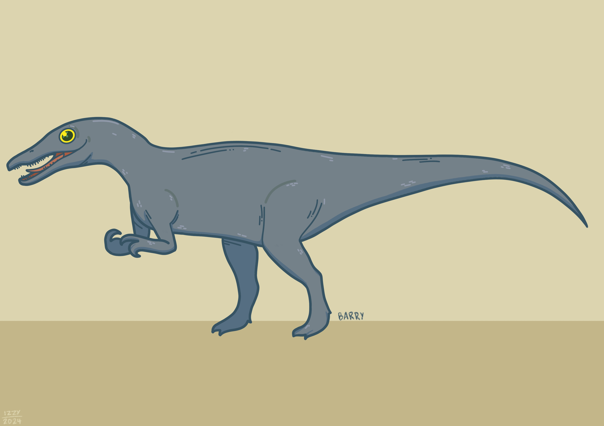
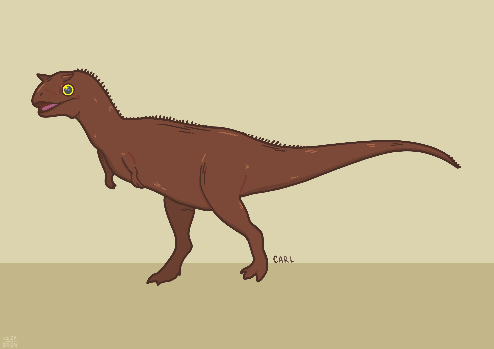
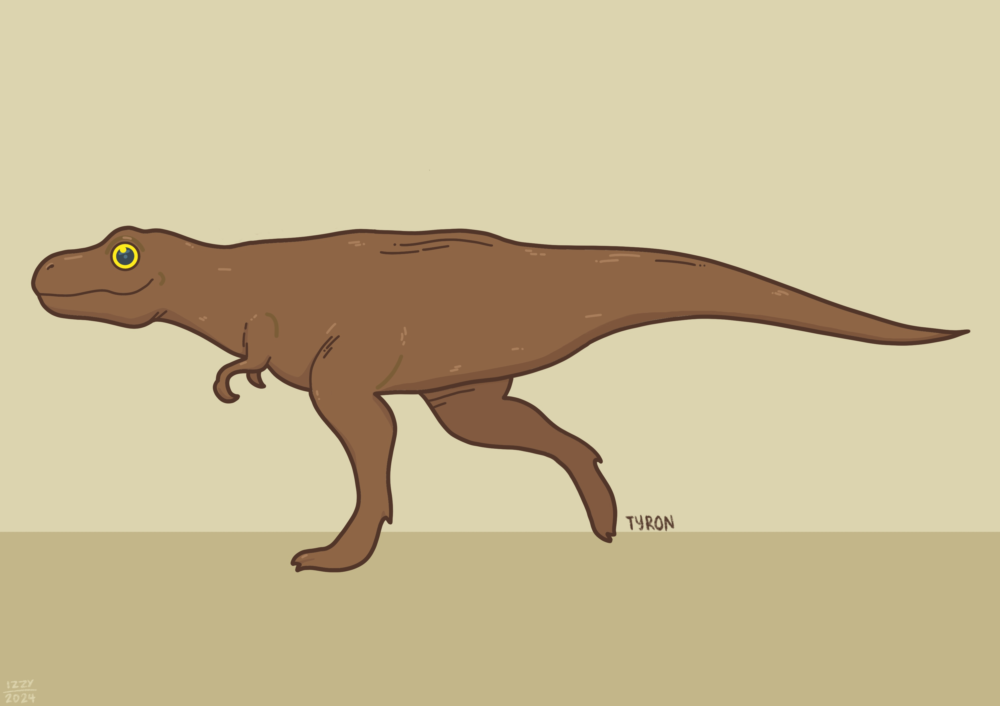
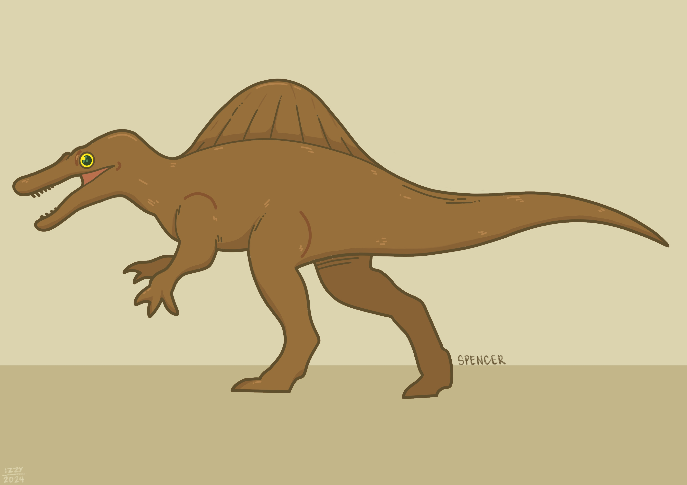

This is an extinct genus of dinosaur that lived during the Late Jurassic period. The name "Allosaurus" means "different lizard". It was named this because of its unique (at the time it was discovered) concave vertebrae. The first fossil remains of this dinosaur were found in 1877 by paleontologist Othniel Charles Marsh.
This is an extinct genus dinosaur which lived in the Early Cretaceous period. The name "Baryonyx" means "heavy claw". It alludes the large claw on the first finger of its front appendages. The first skeleton of this dinosaur was discovered in 1983 and named by palaeontologists Alan J. Charig and Angela C. Milner in 1986.
This is an extinct genus of dinosaur that lived in the Late Cretaceous period. The name "Carnotaurus" are from the Latin words carno [carnis] "flesh" and taurus "bull." Translated can mean "meat-eating bull." Alluding to its bull-like horns. The only skeleton of this dinosaur was dug up in 1984 by paleontologist José Bonaparte.
This is an extinct genus of dinosaur that lived in the the Late Cretaceous period. The name "Tyrannosaurus" means "tyrant lizard" from Ancient Greek τύραννος (túrannos) "tyrant", and σαῦρος (saûros) ('lizard'). "Rex" means "king" in Latin. It's often called T. rex or T-Rex for short. The first partial skeleton discovered of T. rex was found by paleontologist Barnum Brown. He later found another partial skeleton in 1902.
>This is an exticnt genus of dinosaur that lived in the Late Cretaceous period. The name "Spinosaurus" means "spine lizard" since they were likely to have had a forming a sail-like structure. Some authors think that that the spines could've been covered in fat and formed a hump. Remains from this dinosaur were first discovered in 1912, and described by palaeontologist Ernst Stromer in 1915.